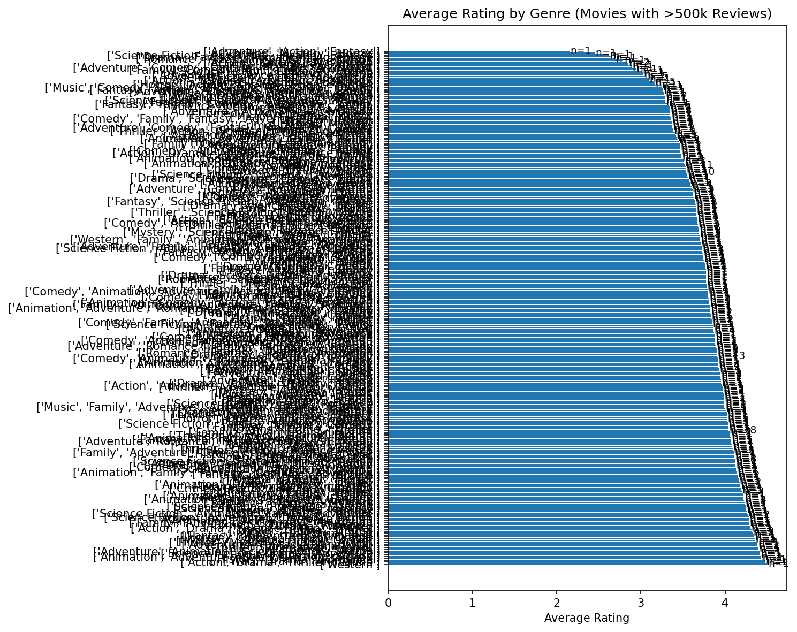
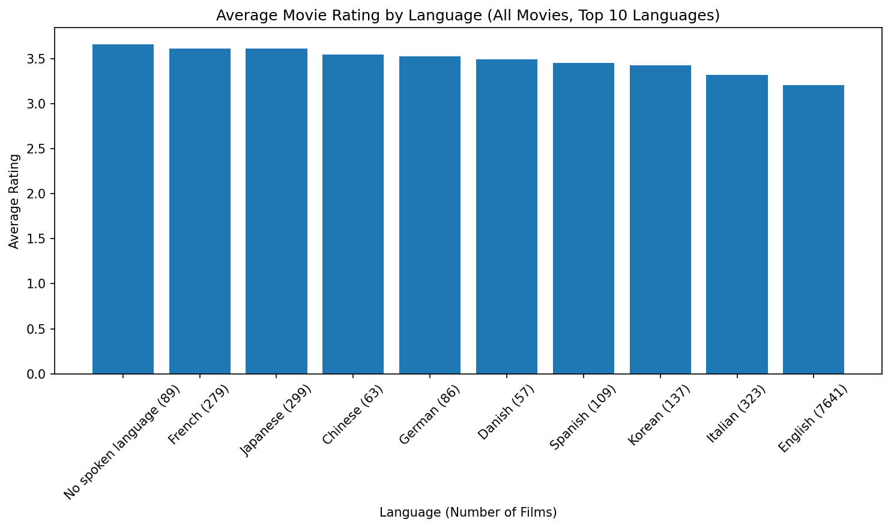

Why do audiences choose what they watch?
As streaming overtakes the theater experience and ticket prices climb, studios face a data-rich opportunity to understand what drives viewership and ratings. Using Letterboxd — the social platform where film enthusiasts log, rate, and discover movies — we analyze 10,003 films to surface patterns that explain audience behavior.
Our analysis draws on a Kaggle dataset (10,000 Movies + Letterboxd Data) containing 29 columns of metadata: director, cast, genre, description, average rating, list appearances, and more.
To recover from a significant decline in theater viewership, studios can turn to data to discover what makes a movie popular.
Four lenses on film audience behavior
List curation & language
Does list curation differ between English and non-English cinema? We hypothesize that non-English films require "list endorsement" to get watched, while English films attract casual viewers.
What drives viewership?
Analyzing the impact of film characteristics on audience reach — from runtime and genre to director reputation and language.
Genre rating polarization
Do certain genres show higher rating polarization? Horror is the classic example — viewers either love it or hate it. We compute variance across the full 10-point star distribution.
Likable vs. highly rated
Are some genres more "likable" than "highly rated"? A film can rack up likes while sitting at a middling average — a meaningful distinction for marketing.
The findings
Genre rating polarization & distribution
The 15 genres with the highest variance in star ratings, alongside their full rating distributions.

Rating vs. review volume — quadrant analysis
Top 150 most-reviewed films mapped by average rating and review count, clustered into four audience quadrants. Hover for details.
Average rating by genre (popular films)
Mean rating per genre for films with more than 500,000 reviews, with film counts annotated.

Distribution of average ratings
Overall distribution of average ratings across all 10,003 films, with the median marked.

Average rating by language
Mean rating for the top 10 most-represented original languages in the dataset.

Average rating vs. watch count by language
Top 20 languages compared across total watch count and average rating. Click a point to highlight. Left panel includes English; right panel excludes it for scale.
Top 10 rated films by language & genre
Use the dropdowns to explore the highest-rated films for any combination of original language and genre.
Sourced from Kaggle — 10,000 Movies + Letterboxd Data. 10,003 unique films, 29 columns including director, cast, genre, description, average rating, list appearances, and more.